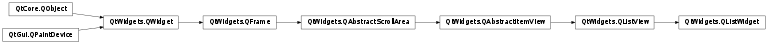

QListWidget¶
Synopsis¶
Functions¶
- def
addItem(item) - def
addItem(label) - def
addItems(labels) - def
closePersistentEditor(item) - def
count() - def
currentItem() - def
currentRow() - def
editItem(item) - def
findItems(text, flags) - def
indexFromItem(item) - def
indexFromItem(item) - def
insertItem(row, item) - def
insertItem(row, label) - def
insertItems(row, labels) - def
isItemHidden(item) - def
isItemSelected(item) - def
isPersistentEditorOpen(item) - def
isSortingEnabled() - def
item(row) - def
itemAt(p) - def
itemAt(x, y) - def
itemFromIndex(index) - def
itemWidget(item) - def
items(data) - def
openPersistentEditor(item) - def
removeItemWidget(item) - def
row(item) - def
selectedItems() - def
setCurrentItem(item) - def
setCurrentItem(item, command) - def
setCurrentRow(row) - def
setCurrentRow(row, command) - def
setItemHidden(item, hide) - def
setItemSelected(item, select) - def
setItemWidget(item, widget) - def
setSortingEnabled(enable) - def
sortItems([order=Qt.AscendingOrder]) - def
takeItem(row) - def
visualItemRect(item)
Virtual functions¶
- def
dropMimeData(index, data, action) - def
mimeData(items) - def
mimeTypes() - def
supportedDropActions()
Slots¶
- def
clear() - def
scrollToItem(item[, hint=EnsureVisible])
Signals¶
- def
currentItemChanged(current, previous) - def
currentRowChanged(currentRow) - def
currentTextChanged(currentText) - def
itemActivated(item) - def
itemChanged(item) - def
itemClicked(item) - def
itemDoubleClicked(item) - def
itemEntered(item) - def
itemPressed(item) - def
itemSelectionChanged()
Detailed Description¶
The
PySide2.QtWidgets.QListWidgetclass provides an item-based list widget.
PySide2.QtWidgets.QListWidgetis a convenience class that provides a list view similar to the one supplied byPySide2.QtWidgets.QListView, but with a classic item-based interface for adding and removing items.PySide2.QtWidgets.QListWidgetuses an internal model to manage eachPySide2.QtWidgets.QListWidgetItemin the list.For a more flexible list view widget, use the
PySide2.QtWidgets.QListViewclass with a standard model.List widgets are constructed in the same way as other widgets:
listWidget = QListWidget(self)The
PySide2.QtWidgets.QAbstractItemView.selectionMode()of a list widget determines how many of the items in the list can be selected at the same time, and whether complex selections of items can be created. This can be set with thePySide2.QtWidgets.QAbstractItemView.setSelectionMode()function.There are two ways to add items to the list: they can be constructed with the list widget as their parent widget, or they can be constructed with no parent widget and added to the list later. If a list widget already exists when the items are constructed, the first method is easier to use:
QListWidgetItem(tr("Oak"), listWidget) QListWidgetItem(tr("Fir"), listWidget) QListWidgetItem(tr("Pine"), listWidget)If you need to insert a new item into the list at a particular position, then it should be constructed without a parent widget. The
PySide2.QtWidgets.QListWidget.insertItem()function should then be used to place it within the list. The list widget will take ownership of the item.newItem = QListWidgetItem() newItem.setText(itemText) listWidget.insertItem(row, newItem)For multiple items,
PySide2.QtWidgets.QListWidget.insertItems()can be used instead. The number of items in the list is found with thePySide2.QtWidgets.QListWidget.count()function. To remove items from the list, usePySide2.QtWidgets.QListWidget.takeItem().The current item in the list can be found with
PySide2.QtWidgets.QListWidget.currentItem(), and changed withPySide2.QtWidgets.QListWidget.setCurrentItem(). The user can also change the current item by navigating with the keyboard or clicking on a different item. When the current item changes, thePySide2.QtWidgets.QListWidget.currentItemChanged()signal is emitted with the new current item and the item that was previously current.
-
class
PySide2.QtWidgets.QListWidget([parent=nullptr])¶ Parameters: parent – PySide2.QtWidgets.QWidgetConstructs an empty
PySide2.QtWidgets.QListWidgetwith the givenparent.
-
PySide2.QtWidgets.QListWidget.addItem(item)¶ Parameters: item – PySide2.QtWidgets.QListWidgetItemInserts the
itemat the end of the list widget.Warning
A
PySide2.QtWidgets.QListWidgetItemcan only be added to aPySide2.QtWidgets.QListWidgetonce. Adding the samePySide2.QtWidgets.QListWidgetItemmultiple times to aPySide2.QtWidgets.QListWidgetwill result in undefined behavior.
-
PySide2.QtWidgets.QListWidget.addItem(label) Parameters: label – unicode Inserts an item with the text
labelat the end of the list widget.
-
PySide2.QtWidgets.QListWidget.addItems(labels)¶ Parameters: labels – list of strings Inserts items with the text
labelsat the end of the list widget.
-
PySide2.QtWidgets.QListWidget.clear()¶ Removes all items and selections in the view.
Warning
All items will be permanently deleted.
-
PySide2.QtWidgets.QListWidget.closePersistentEditor(item)¶ Parameters: item – PySide2.QtWidgets.QListWidgetItemCloses the persistent editor for the given
item.
-
PySide2.QtWidgets.QListWidget.count()¶ Return type: PySide2.QtCore.int
-
PySide2.QtWidgets.QListWidget.currentItem()¶ Return type: PySide2.QtWidgets.QListWidgetItemReturns the current item.
-
PySide2.QtWidgets.QListWidget.currentItemChanged(current, previous)¶ Parameters: - current –
PySide2.QtWidgets.QListWidgetItem - previous –
PySide2.QtWidgets.QListWidgetItem
- current –
-
PySide2.QtWidgets.QListWidget.currentRow()¶ Return type: PySide2.QtCore.int
-
PySide2.QtWidgets.QListWidget.currentRowChanged(currentRow)¶ Parameters: currentRow – PySide2.QtCore.int
-
PySide2.QtWidgets.QListWidget.currentTextChanged(currentText)¶ Parameters: currentText – unicode
-
PySide2.QtWidgets.QListWidget.dropMimeData(index, data, action)¶ Parameters: - index –
PySide2.QtCore.int - data –
PySide2.QtCore.QMimeData - action –
PySide2.QtCore.Qt.DropAction
Return type: PySide2.QtCore.boolHandles
datasupplied by an external drag and drop operation that ended with the givenactionin the givenindex. Returnstrueifdataandactioncan be handled by the model; otherwise returnsfalse.- index –
-
PySide2.QtWidgets.QListWidget.editItem(item)¶ Parameters: item – PySide2.QtWidgets.QListWidgetItemStarts editing the
itemif it is editable.
-
PySide2.QtWidgets.QListWidget.findItems(text, flags)¶ Parameters: - text – unicode
- flags –
PySide2.QtCore.Qt.MatchFlags
Return type: Finds items with the text that matches the string
textusing the givenflags.
-
PySide2.QtWidgets.QListWidget.indexFromItem(item)¶ Parameters: item – PySide2.QtWidgets.QListWidgetItemReturn type: PySide2.QtCore.QModelIndexReturns the
PySide2.QtCore.QModelIndexassociated with the givenitem.Note
In Qt versions prior to 5.10, this function took a non-
constitem.
-
PySide2.QtWidgets.QListWidget.indexFromItem(item) Parameters: item – PySide2.QtWidgets.QListWidgetItemReturn type: PySide2.QtCore.QModelIndexThis is an overloaded function.
-
PySide2.QtWidgets.QListWidget.insertItem(row, label)¶ Parameters: - row –
PySide2.QtCore.int - label – unicode
Inserts an item with the text
labelin the list widget at the position given byrow.- row –
-
PySide2.QtWidgets.QListWidget.insertItem(row, item) Parameters: - row –
PySide2.QtCore.int - item –
PySide2.QtWidgets.QListWidgetItem
Inserts the
itemat the position in the list given byrow.- row –
-
PySide2.QtWidgets.QListWidget.insertItems(row, labels)¶ Parameters: - row –
PySide2.QtCore.int - labels – list of strings
Inserts items from the list of
labelsinto the list, starting at the givenrow.- row –
-
PySide2.QtWidgets.QListWidget.isItemHidden(item)¶ Parameters: item – PySide2.QtWidgets.QListWidgetItemReturn type: PySide2.QtCore.boolReturns
trueif theitemis explicitly hidden; otherwise returnsfalse.This function is deprecated. Use
QListWidgetItem.isHidden()instead.
-
PySide2.QtWidgets.QListWidget.isItemSelected(item)¶ Parameters: item – PySide2.QtWidgets.QListWidgetItemReturn type: PySide2.QtCore.boolReturns
trueifitemis selected; otherwise returnsfalse.This function is deprecated. Use
QListWidgetItem.isSelected()instead.
-
PySide2.QtWidgets.QListWidget.isPersistentEditorOpen(item)¶ Parameters: item – PySide2.QtWidgets.QListWidgetItemReturn type: PySide2.QtCore.boolReturns whether a persistent editor is open for item
item.
-
PySide2.QtWidgets.QListWidget.isSortingEnabled()¶ Return type: PySide2.QtCore.bool
-
PySide2.QtWidgets.QListWidget.item(row)¶ Parameters: row – PySide2.QtCore.intReturn type: PySide2.QtWidgets.QListWidgetItemReturns the item that occupies the given
rowin the list if one has been set; otherwise returns 0.See also
-
PySide2.QtWidgets.QListWidget.itemActivated(item)¶ Parameters: item – PySide2.QtWidgets.QListWidgetItem
-
PySide2.QtWidgets.QListWidget.itemAt(p)¶ Parameters: p – PySide2.QtCore.QPointReturn type: PySide2.QtWidgets.QListWidgetItemReturns a pointer to the item at the coordinates
p. The coordinates are relative to the list widget’sPySide2.QtWidgets.QAbstractScrollArea.viewport().
-
PySide2.QtWidgets.QListWidget.itemAt(x, y) Parameters: - x –
PySide2.QtCore.int - y –
PySide2.QtCore.int
Return type: This is an overloaded function.
Returns a pointer to the item at the coordinates (
x,y). The coordinates are relative to the list widget’sPySide2.QtWidgets.QAbstractScrollArea.viewport().- x –
-
PySide2.QtWidgets.QListWidget.itemChanged(item)¶ Parameters: item – PySide2.QtWidgets.QListWidgetItem
-
PySide2.QtWidgets.QListWidget.itemClicked(item)¶ Parameters: item – PySide2.QtWidgets.QListWidgetItem
-
PySide2.QtWidgets.QListWidget.itemDoubleClicked(item)¶ Parameters: item – PySide2.QtWidgets.QListWidgetItem
-
PySide2.QtWidgets.QListWidget.itemEntered(item)¶ Parameters: item – PySide2.QtWidgets.QListWidgetItem
-
PySide2.QtWidgets.QListWidget.itemFromIndex(index)¶ Parameters: index – PySide2.QtCore.QModelIndexReturn type: PySide2.QtWidgets.QListWidgetItemReturns a pointer to the
PySide2.QtWidgets.QListWidgetItemassociated with the givenindex.
-
PySide2.QtWidgets.QListWidget.itemPressed(item)¶ Parameters: item – PySide2.QtWidgets.QListWidgetItem
-
PySide2.QtWidgets.QListWidget.itemSelectionChanged()¶
-
PySide2.QtWidgets.QListWidget.itemWidget(item)¶ Parameters: item – PySide2.QtWidgets.QListWidgetItemReturn type: PySide2.QtWidgets.QWidgetReturns the widget displayed in the given
item.
-
PySide2.QtWidgets.QListWidget.items(data)¶ Parameters: data – PySide2.QtCore.QMimeDataReturn type: Returns a list of pointers to the items contained in the
dataobject. If the object was not created by aPySide2.QtWidgets.QListWidgetin the same process, the list is empty.
-
PySide2.QtWidgets.QListWidget.mimeData(items)¶ Parameters: items – Return type: PySide2.QtCore.QMimeDataReturns an object that contains a serialized description of the specified
items. The format used to describe the items is obtained from thePySide2.QtWidgets.QListWidget.mimeTypes()function.If the list of items is empty, 0 is returned instead of a serialized empty list.
-
PySide2.QtWidgets.QListWidget.mimeTypes()¶ Return type: list of strings Returns a list of MIME types that can be used to describe a list of listwidget items.
-
PySide2.QtWidgets.QListWidget.openPersistentEditor(item)¶ Parameters: item – PySide2.QtWidgets.QListWidgetItemOpens an editor for the given
item. The editor remains open after editing.
-
PySide2.QtWidgets.QListWidget.removeItemWidget(item)¶ Parameters: item – PySide2.QtWidgets.QListWidgetItemRemoves the widget set on the given
item.To remove an item (row) from the list entirely, either delete the item or use
PySide2.QtWidgets.QListWidget.takeItem().
-
PySide2.QtWidgets.QListWidget.row(item)¶ Parameters: item – PySide2.QtWidgets.QListWidgetItemReturn type: PySide2.QtCore.intReturns the row containing the given
item.See also
-
PySide2.QtWidgets.QListWidget.scrollToItem(item[, hint=EnsureVisible])¶ Parameters: Scrolls the view if necessary to ensure that the
itemis visible.hintspecifies where theitemshould be located after the operation.
-
PySide2.QtWidgets.QListWidget.selectedItems()¶ Return type: Returns a list of all selected items in the list widget.
-
PySide2.QtWidgets.QListWidget.setCurrentItem(item)¶ Parameters: item – PySide2.QtWidgets.QListWidgetItemSets the current item to
item.Unless the selection mode is
NoSelection, the item is also selected.
-
PySide2.QtWidgets.QListWidget.setCurrentItem(item, command) Parameters: - item –
PySide2.QtWidgets.QListWidgetItem - command –
PySide2.QtCore.QItemSelectionModel.SelectionFlags
Set the current item to
item, using the givencommand.- item –
-
PySide2.QtWidgets.QListWidget.setCurrentRow(row, command)¶ Parameters: - row –
PySide2.QtCore.int - command –
PySide2.QtCore.QItemSelectionModel.SelectionFlags
Sets the current row to be the given
row, using the givencommand,- row –
-
PySide2.QtWidgets.QListWidget.setCurrentRow(row) Parameters: row – PySide2.QtCore.int
-
PySide2.QtWidgets.QListWidget.setItemHidden(item, hide)¶ Parameters: - item –
PySide2.QtWidgets.QListWidgetItem - hide –
PySide2.QtCore.bool
If
hideis true, theitemwill be hidden; otherwise it will be shown.This function is deprecated. Use
QListWidgetItem.setHidden()instead.- item –
-
PySide2.QtWidgets.QListWidget.setItemSelected(item, select)¶ Parameters: - item –
PySide2.QtWidgets.QListWidgetItem - select –
PySide2.QtCore.bool
Selects or deselects the given
itemdepending on whetherselectis true of false.This function is deprecated. Use
QListWidgetItem.setSelected()instead.- item –
-
PySide2.QtWidgets.QListWidget.setItemWidget(item, widget)¶ Parameters: - item –
PySide2.QtWidgets.QListWidgetItem - widget –
PySide2.QtWidgets.QWidget
Sets the
widgetto be displayed in the givenitem.This function should only be used to display static content in the place of a list widget item. If you want to display custom dynamic content or implement a custom editor widget, use
PySide2.QtWidgets.QListViewand subclassPySide2.QtWidgets.QItemDelegateinstead.- item –
-
PySide2.QtWidgets.QListWidget.setSortingEnabled(enable)¶ Parameters: enable – PySide2.QtCore.bool
-
PySide2.QtWidgets.QListWidget.sortItems([order=Qt.AscendingOrder])¶ Parameters: order – PySide2.QtCore.Qt.SortOrderSorts all the items in the list widget according to the specified
order.
-
PySide2.QtWidgets.QListWidget.supportedDropActions()¶ Return type: PySide2.QtCore.Qt.DropActionsReturns the drop actions supported by this view.
See also
Qt.DropActions
-
PySide2.QtWidgets.QListWidget.takeItem(row)¶ Parameters: row – PySide2.QtCore.intReturn type: PySide2.QtWidgets.QListWidgetItemRemoves and returns the item from the given
rowin the list widget; otherwise returns 0.Items removed from a list widget will not be managed by Qt, and will need to be deleted manually.
-
PySide2.QtWidgets.QListWidget.visualItemRect(item)¶ Parameters: item – PySide2.QtWidgets.QListWidgetItemReturn type: PySide2.QtCore.QRectReturns the rectangle on the viewport occupied by the item at
item.
© 2018 The Qt Company Ltd. Documentation contributions included herein are the copyrights of their respective owners. The documentation provided herein is licensed under the terms of the GNU Free Documentation License version 1.3 as published by the Free Software Foundation. Qt and respective logos are trademarks of The Qt Company Ltd. in Finland and/or other countries worldwide. All other trademarks are property of their respective owners.